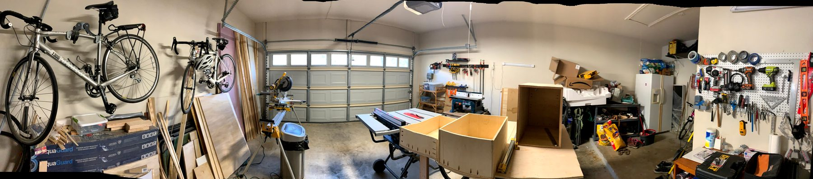

About
This is a hobby, not a business. Everything here was built in a garage on weekends and evenings, with ordinary tools, a lot of patience and a fair amount of trial and error.
Most of my days are spent in front of a screen. The workshop is where I go to get away from it. Measuring twice, cutting once, sanding until the grain comes up, waiting for a finish to cure: it all forces me to slow down and pay attention to one thing at a time. It is the closest thing I have found to meditation, and every project teaches me something the last one did not.
Almost every piece was made for someone I know. A bench for a garden, a board for long evenings of chess, a stand for a desk, a sign for a bedroom door. Making something useful with your hands for people you care about is a good reason to keep learning. Nothing here is for sale. If a piece gives you an idea for your own workshop, that is the best outcome I could ask for.
